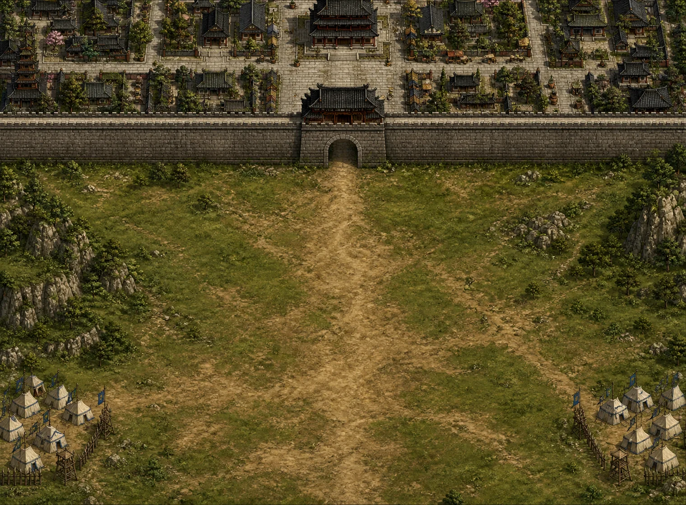
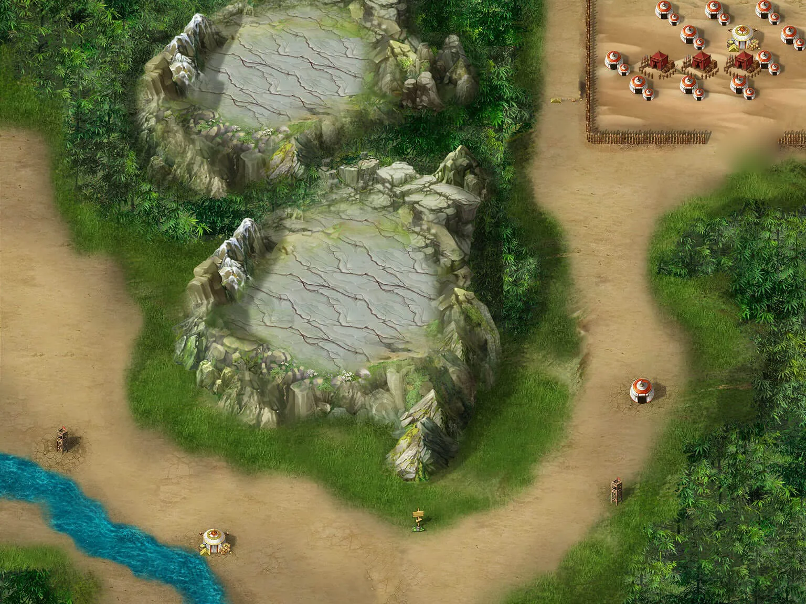

王室东迁
秩序裂开第一道缝隙
旧礼仍在，诸侯已各怀锋芒。守城、勤王与初次会盟构成故事的起点。

一卷山河，百年兵锋
历史事件、人物命运与战术关卡连续展开。你面对的不只是下一支敌军，也是在礼崩乐坏的时代里不断变化的盟约、粮道和人心。
王室东迁
旧礼仍在，诸侯已各怀锋芒。守城、勤王与初次会盟构成故事的起点。
春秋争霸
山谷伏击、河岸对峙、诸侯联军。战场目标随历史局势改变，而非只有歼灭。
战国纵横
更大的地图、更密集的势力关系，以及必须跨回合权衡的兵力和补给。
六国归秦
名将与谋臣走向各自结局，列国长卷在统一战争中收束。
山河即规则
城门决定突破口，河流切断阵线，山脊遮蔽行军，营寨重塑攻守。真实地图素材直接来自游戏工程。

城门压缩正面，营区提供整备空间；进攻路线清晰，但每一步都暴露在守军视野中。
运筹之道
合法行动、地形代价、目标优先级、敌情不确定性与长期风险共同进入决策。复杂计算藏在幕后，玩家看到的是清晰、可复盘的战术选择。
护送、坚守、突围、占点与歼敌可以同时存在。主将生存和历史条件不会被简单伤害数字淹没。
步兵、骑兵、战车、弓手与谋士共享有限空间；编队、路径和目标分配需要彼此让路。
侦察得到的是证据，不是全知视角。风险、后验与反事实分析保留不确定性，也保留误判的代价。
所有策略最终回到原生行动、占位、碰撞和胜负条件。数学层提供建议，但不能创造非法动作。
列阵
